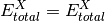
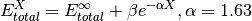
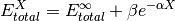
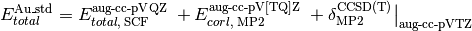
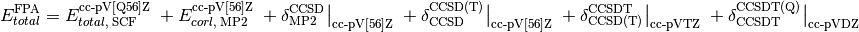

Complete Basis Set¶
Code author: Lori A. Burns
Section author: Lori A. Burns
-
complete_basis_set(name[, scf_basis, scf_scheme, corl_wfn, corl_basis, corl_scheme, delta_wfn, delta_wfn_lesser, delta_basis, delta_scheme, delta2_wfn, delta2_wfn_lesser, delta2_basis, delta2_scheme, delta3_wfn, delta3_wfn_lesser, delta3_basis, delta3_scheme, delta4_wfn, delta4_wfn_lesser, delta4_basis, delta4_scheme, delta5_wfn, delta5_wfn_lesser, delta5_basis, delta5_scheme])[source]¶ Function to define a multistage energy method from combinations of basis set extrapolations and delta corrections and condense the components into a minimum number of calculations.
Aliases: cbs() Returns: (float) – Total electronic energy in Hartrees PSI variables: Caution
Some features are not yet implemented. Buy a developer a coffee.
- No way to tell function to boost fitting basis size for all calculations.
- No way to extrapolate def2 family basis sets
- Need to add more extrapolation schemes
As represented in the equation below, a CBS energy method is defined in several sequential stages (scf, corl, delta, delta2, delta3, delta4, delta5) covering treatment of the reference total energy, the correlation energy, a delta correction to the correlation energy, and a second delta correction, etc.. Each is activated by its stage_wfn keyword and is only allowed if all preceding stages are active.
![E_{total}^{\text{CBS}} = \mathcal{F}_{\textbf{scf\_scheme}} \left(E_{total,\; \text{SCF}}^{\textbf{scf\_basis}}\right) \; + \mathcal{F}_{\textbf{corl\_scheme}} \left(E_{corl,\; \textbf{corl\_wfn}}^{\textbf{corl\_basis}}\right) \; + \delta_{\textbf{delta\_wfn\_lesser}}^{\textbf{delta\_wfn}} \; + \delta_{\textbf{delta2\_wfn\_lesser}}^{\textbf{delta2\_wfn}} \; + \delta_{\textbf{delta3\_wfn\_lesser}}^{\textbf{delta3\_wfn}} \; + \delta_{\textbf{delta4\_wfn\_lesser}}^{\textbf{delta4\_wfn}} \; + \delta_{\textbf{delta5\_wfn\_lesser}}^{\textbf{delta5\_wfn}}](_images/math/dc7ee176476c1c8c6385cb631ef6f6b64aae76e0.png)
Here,
 is an energy or energy extrapolation scheme, and the following also hold.
is an energy or energy extrapolation scheme, and the following also hold.


A translation of this ungainly equation to example [5] below is as follows. In words, this is a double- and triple-zeta 2-point Helgaker-extrapolated CCSD(T) coupled-cluster correlation correction appended to a triple- and quadruple-zeta 2-point Helgaker-extrapolated MP2 correlation energy appended to a SCF/aug-cc-pVQZ reference energy.
![E_{total}^{\text{CBS}} = \mathcal{F}_{\text{highest\_1}} \left(E_{total,\; \text{SCF}}^{\text{aug-cc-pVQZ}}\right) \; + \mathcal{F}_{\text{corl\_xtpl\_helgaker\_2}} \left(E_{corl,\; \text{MP2}}^{\text{aug-cc-pV[TQ]Z}}\right) \; + \delta_{\text{MP2}}^{\text{CCSD(T)}}](_images/math/c1de2370061ad81a169fe0782c7c805cc6ae5b33.png)
![\delta_{\text{MP2}}^{\text{CCSD(T)}} \; = \mathcal{F}_{\text{corl\_xtpl\_helgaker\_2}} \left(E_{corl,\; \text{CCSD(T)}}^{\text{aug-cc-pV[DT]Z}}\right) - \mathcal{F}_{\text{corl\_xtpl\_helgaker\_2}} \left(E_{corl,\; \text{MP2}}^{\text{aug-cc-pV[DT]Z}}\right)](_images/math/adcf3c13919161c842f2e7ee0166527f2347b899.png)
- Energy Methods
The presence of a stage_wfn keyword is the indicator to incorporate (and check for stage_basis and stage_scheme keywords) and compute that stage in defining the CBS energy.
The cbs() function requires, at a minimum,
name='scf'andscf_basiskeywords to be specified for reference-step only jobs andnameandcorl_basiskeywords for correlated jobs.The following energy methods have been set up for cbs().
- scf
- mp2
- mp2.5
- mp3
- mp4(sdq)
- mp4
- mpn
- omp2
- omp2.5
- omp3
- olccd
- lccd
- lccsd
- cepa(0)
- cepa(1)
- cepa(3)
- acpf
- aqcc
- qcisd
- cc2
- ccsd
- fno-ccsd
- bccd
- cc3
- qcisd(t)
- ccsd(t)
- fno-ccsd(t)
- bccd(t)
- cisd
- cisdt
- cisdtq
- cin
- fci
- mrccsd
- mrccsd(t)
- mrccsdt
- mrccsdt(q)
Parameters: - name (string) –
'scf'||'ccsd'|| etc.First argument, usually unlabeled. Indicates the computational method for the correlation energy, unless only reference step to be performed, in which case should be
'scf'. Overruled if stage_wfn keywords supplied. - scf_wfn (string) –

'scf' ||
|| 'c4-scf'|| etc.Indicates the energy method for which the reference energy is to be obtained. Generally unnecessary, as ‘scf’ is the scf in Psi4 but can be used to direct lone scf components to run in Psi4 or Cfour in a mixed-program composite method.
- corl_wfn (string) –
'mp2'||'ccsd(t)'|| etc.Indicates the energy method for which the correlation energy is to be obtained. Can also be specified with
nameor as the unlabeled first argument to the function. - delta_wfn (string) –
'ccsd'||'ccsd(t)'|| etc.Indicates the (superior) energy method for which a delta correction to the correlation energy is to be obtained.
- delta_wfn_lesser (string) –
corl_wfn || 'mp2'|| etc.Indicates the inferior energy method for which a delta correction to the correlation energy is to be obtained.
- delta2_wfn (string) –
'ccsd'||'ccsd(t)'|| etc.Indicates the (superior) energy method for which a second delta correction to the correlation energy is to be obtained.
- delta2_wfn_lesser (string) –
delta_wfn || 'ccsd(t)'|| etc.Indicates the inferior energy method for which a second delta correction to the correlation energy is to be obtained.
- delta3_wfn (string) –
'ccsd'||'ccsd(t)'|| etc.Indicates the (superior) energy method for which a third delta correction to the correlation energy is to be obtained.
- delta3_wfn_lesser (string) –
delta2_wfn || 'ccsd(t)'|| etc.Indicates the inferior energy method for which a third delta correction to the correlation energy is to be obtained.
- delta4_wfn (string) –
'ccsd'||'ccsd(t)'|| etc.Indicates the (superior) energy method for which a fourth delta correction to the correlation energy is to be obtained.
- delta4_wfn_lesser (string) –
delta3_wfn || 'ccsd(t)'|| etc.Indicates the inferior energy method for which a fourth delta correction to the correlation energy is to be obtained.
- delta5_wfn (string) –
'ccsd'||'ccsd(t)'|| etc.Indicates the (superior) energy method for which a fifth delta correction to the correlation energy is to be obtained.
- delta5_wfn_lesser (string) –
delta4_wfn || 'ccsd(t)'|| etc.Indicates the inferior energy method for which a fifth delta correction to the correlation energy is to be obtained.
- Basis Sets
Currently, the basis set set through
setcommands have no influence on a cbs calculation.
Parameters: - scf_basis (basis string) –
corl_basis || 'cc-pV[TQ]Z'||'jun-cc-pv[tq5]z'||'6-31G*'|| etc.Indicates the sequence of basis sets employed for the reference energy. If any correlation method is specified,
scf_basiscan default tocorl_basis. - corl_basis (basis string) –
'cc-pV[TQ]Z'||'jun-cc-pv[tq5]z'||'6-31G*'|| etc.Indicates the sequence of basis sets employed for the correlation energy.
- delta_basis (basis string) –
'cc-pV[TQ]Z'||'jun-cc-pv[tq5]z'||'6-31G*'|| etc.Indicates the sequence of basis sets employed for the delta correction to the correlation energy.
- delta2_basis (basis string) –
'cc-pV[TQ]Z'||'jun-cc-pv[tq5]z'||'6-31G*'|| etc.Indicates the sequence of basis sets employed for the second delta correction to the correlation energy.
- delta3_basis (basis string) –
'cc-pV[TQ]Z'||'jun-cc-pv[tq5]z'||'6-31G*'|| etc.Indicates the sequence of basis sets employed for the third delta correction to the correlation energy.
- delta4_basis (basis string) –
'cc-pV[TQ]Z'||'jun-cc-pv[tq5]z'||'6-31G*'|| etc.Indicates the sequence of basis sets employed for the fourth delta correction to the correlation energy.
- delta5_basis (basis string) –
'cc-pV[TQ]Z'||'jun-cc-pv[tq5]z'||'6-31G*'|| etc.Indicates the sequence of basis sets employed for the fifth delta correction to the correlation energy.
- Schemes
Transformations of the energy through basis set extrapolation for each stage of the CBS definition. A complaint is generated if number of basis sets in stage_basis does not exactly satisfy requirements of stage_scheme. An exception is the default,
'xtpl_highest_1', which uses the best basis set available. See Extrapolation Schemes for all available schemes.
Parameters: - scf_scheme (function) –
xtpl_highest_1 || scf_xtpl_helgaker_3|| etc.Indicates the basis set extrapolation scheme to be applied to the reference energy. Defaults to
scf_xtpl_helgaker_3()if three valid basis sets present inscf_basis,scf_xtpl_helgaker_2()if two valid basis sets present inscf_basis, andxtpl_highest_1()otherwise. - corl_scheme (function) –
xtpl_highest_1 || corl_xtpl_helgaker_2|| etc.Indicates the basis set extrapolation scheme to be applied to the correlation energy. Defaults to
corl_xtpl_helgaker_2()if two valid basis sets present incorl_basisandxtpl_highest_1()otherwise. - delta_scheme (function) –
xtpl_highest_1 || corl_xtpl_helgaker_2|| etc.Indicates the basis set extrapolation scheme to be applied to the delta correction to the correlation energy. Defaults to
corl_xtpl_helgaker_2()if two valid basis sets present indelta_basisandxtpl_highest_1()otherwise. - delta2_scheme (function) –
xtpl_highest_1 || corl_xtpl_helgaker_2|| etc.Indicates the basis set extrapolation scheme to be applied to the second delta correction to the correlation energy. Defaults to
corl_xtpl_helgaker_2()if two valid basis sets present indelta2_basisandxtpl_highest_1()otherwise. - delta3_scheme (function) –
xtpl_highest_1 || corl_xtpl_helgaker_2|| etc.Indicates the basis set extrapolation scheme to be applied to the third delta correction to the correlation energy. Defaults to
corl_xtpl_helgaker_2()if two valid basis sets present indelta3_basisandxtpl_highest_1()otherwise. - delta4_scheme (function) –
xtpl_highest_1 || corl_xtpl_helgaker_2|| etc.Indicates the basis set extrapolation scheme to be applied to the fourth delta correction to the correlation energy. Defaults to
corl_xtpl_helgaker_2()if two valid basis sets present indelta4_basisandxtpl_highest_1()otherwise. - delta5_scheme (function) –
xtpl_highest_1 || corl_xtpl_helgaker_2|| etc.Indicates the basis set extrapolation scheme to be applied to the fifth delta correction to the correlation energy. Defaults to
corl_xtpl_helgaker_2()if two valid basis sets present indelta5_basisandxtpl_highest_1()otherwise. - molecule (molecule) –
h2o|| etc.The target molecule, if not the last molecule defined.
Examples: >>> # [1] replicates with cbs() the simple model chemistry scf/cc-pVDZ: set basis cc-pVDZ energy('scf') >>> cbs(name='scf', scf_basis='cc-pVDZ')
>>> # [2] replicates with cbs() the simple model chemistry mp2/jun-cc-pVDZ: set basis jun-cc-pVDZ energy('mp2') >>> cbs(name='mp2', corl_basis='jun-cc-pVDZ')
>>> # [3] DTQ-zeta extrapolated scf reference energy >>> cbs(name='scf', scf_basis='cc-pV[DTQ]Z', scf_scheme=scf_xtpl_helgaker_3)
>>> # [4] DT-zeta extrapolated mp2 correlation energy atop a T-zeta reference >>> cbs(corl_wfn='mp2', corl_basis='cc-pv[dt]z', corl_scheme=corl_xtpl_helgaker_2)
>>> # [5] a DT-zeta extrapolated coupled-cluster correction atop a TQ-zeta extrapolated mp2 correlation energy atop a Q-zeta reference (both equivalent) >>> cbs(corl_wfn='mp2', corl_basis='aug-cc-pv[tq]z', delta_wfn='ccsd(t)', delta_basis='aug-cc-pv[dt]z') >>> cbs(energy, wfn='mp2', corl_basis='aug-cc-pv[tq]z', corl_scheme=corl_xtpl_helgaker_2, delta_wfn='ccsd(t)', delta_basis='aug-cc-pv[dt]z', delta_scheme=corl_xtpl_helgaker_2)
>>> # [6] a D-zeta ccsd(t) correction atop a DT-zeta extrapolated ccsd cluster correction atop a TQ-zeta extrapolated mp2 correlation energy atop a Q-zeta reference >>> cbs(name='mp2', corl_basis='aug-cc-pv[tq]z', corl_scheme=corl_xtpl_helgaker_2, delta_wfn='ccsd', delta_basis='aug-cc-pv[dt]z', delta_scheme=corl_xtpl_helgaker_2, delta2_wfn='ccsd(t)', delta2_wfn_lesser='ccsd', delta2_basis='aug-cc-pvdz')
>>> # [7] cbs() coupled with database() >>> TODO database('mp2', 'BASIC', subset=['h2o','nh3'], symm='on', func=cbs, corl_basis='cc-pV[tq]z', corl_scheme=corl_xtpl_helgaker_2, delta_wfn='ccsd(t)', delta_basis='sto-3g')
>>> # [8] cbs() coupled with optimize() >>> TODO optimize('mp2', corl_basis='cc-pV[DT]Z', corl_scheme=corl_xtpl_helgaker_2, func=cbs)
Note
Presently (May 2016), only two of the five delta possibilities are active. Also, temporarily extrapolations are performed on differences of target and scf total energies, rather than on correlation energies directly. This doesn’t affect the extrapolated values of the particular formulas defined here (though it does affect the betas, which are commented out), but it is sloppy and temporary and could affect any user-defined corl extrapolations.
Output¶
At the beginning of a cbs() job is printed a listing of the individual
energy calculations which will be performed. The output snippet below is
from the example job [2] above. It shows first each model chemistry needed
to compute the aggregate model chemistry requested through cbs(). Then,
since, for example, an energy('ccsd(t)') yields CCSD(T), CCSD, MP2,
and SCF energy values, the wrapper condenses this task list into the second
list of minimum number of calculations which will actually be run.
Naive listing of computations required.
scf / aug-cc-pvqz for SCF TOTAL ENERGY
mp2 / aug-cc-pvtz for MP2 CORRELATION ENERGY
mp2 / aug-cc-pvqz for MP2 CORRELATION ENERGY
ccsd(t) / aug-cc-pvdz for CCSD(T) CORRELATION ENERGY
ccsd(t) / aug-cc-pvtz for CCSD(T) CORRELATION ENERGY
mp2 / aug-cc-pvdz for MP2 CORRELATION ENERGY
mp2 / aug-cc-pvtz for MP2 CORRELATION ENERGY
Enlightened listing of computations required.
mp2 / aug-cc-pvqz for MP2 CORRELATION ENERGY
ccsd(t) / aug-cc-pvdz for CCSD(T) CORRELATION ENERGY
ccsd(t) / aug-cc-pvtz for CCSD(T) CORRELATION ENERGY
At the end of a cbs() job is printed a summary section like the one below. First, in the components section, are listed the results for each model chemistry available, whether required for the cbs job (*) or not. Next, in the stages section, are listed the results for each extrapolation. The energies of this section must be dotted with the weightings in column Wt to get the total cbs energy. Finally, in the CBS section, are listed the results for each stage of the cbs procedure. The stage energies of this section sum outright to the total cbs energy.
==> Components <==
----------------------------------------------------------------------------------
Method / Basis Rqd Energy [H] Variable
----------------------------------------------------------------------------------
scf / aug-cc-pvqz * -1.11916375 SCF TOTAL ENERGY
mp2 / aug-cc-pvqz * -0.03407997 MP2 CORRELATION ENERGY
scf / aug-cc-pvdz -1.11662884 SCF TOTAL ENERGY
mp2 / aug-cc-pvdz * -0.02881480 MP2 CORRELATION ENERGY
ccsd(t) / aug-cc-pvdz * -0.03893812 CCSD(T) CORRELATION ENERGY
ccsd / aug-cc-pvdz -0.03893812 CCSD CORRELATION ENERGY
scf / aug-cc-pvtz -1.11881134 SCF TOTAL ENERGY
mp2 / aug-cc-pvtz * -0.03288936 MP2 CORRELATION ENERGY
ccsd(t) / aug-cc-pvtz * -0.04201004 CCSD(T) CORRELATION ENERGY
ccsd / aug-cc-pvtz -0.04201004 CCSD CORRELATION ENERGY
----------------------------------------------------------------------------------
==> Stages <==
----------------------------------------------------------------------------------
Stage Method / Basis Wt Energy [H] Scheme
----------------------------------------------------------------------------------
scf scf / aug-cc-pvqz 1 -1.11916375 highest_1
corl mp2 / aug-cc-pv[tq]z 1 -0.03494879 corl_xtpl_helgaker_2
delta ccsd(t) / aug-cc-pv[dt]z 1 -0.04330347 corl_xtpl_helgaker_2
delta mp2 / aug-cc-pv[dt]z -1 -0.03460497 corl_xtpl_helgaker_2
----------------------------------------------------------------------------------
==> CBS <==
----------------------------------------------------------------------------------
Stage Method / Basis Energy [H] Scheme
----------------------------------------------------------------------------------
scf scf / aug-cc-pvqz -1.11916375 highest_1
corl mp2 / aug-cc-pv[tq]z -0.03494879 corl_xtpl_helgaker_2
delta ccsd(t) - mp2 / aug-cc-pv[dt]z -0.00869851 corl_xtpl_helgaker_2
total CBS -1.16281105
----------------------------------------------------------------------------------
Extrapolation Schemes¶
-
xtpl_highest_1(functionname, zHI, valueHI, verbose=True)[source]¶ Scheme for total or correlation energies with a single basis or the highest zeta-level among an array of bases. Used by
complete_basis_set().
-
scf_xtpl_helgaker_2(functionname, zLO, valueLO, zHI, valueHI, verbose=True, alpha=1.63)[source]¶ Extrapolation scheme for reference energies with two adjacent zeta-level bases. Used by
complete_basis_set().
-
scf_xtpl_helgaker_3(functionname, zLO, valueLO, zMD, valueMD, zHI, valueHI, verbose=True)[source]¶ Extrapolation scheme for reference energies with three adjacent zeta-level bases. Used by
complete_basis_set().
-
corl_xtpl_helgaker_2(functionname, zLO, valueLO, zHI, valueHI, verbose=True)[source]¶ Extrapolation scheme for correlation energies with two adjacent zeta-level bases. Used by
complete_basis_set().
Aliases¶
When a particular composite method or its functional form is going to be
reused often, it is convenient to define an alias to it. A convenient
place for such Python code to reside is in psi4/share/python/aliases.py
(source location) or psi4/share/psi/python/aliases.py (installed
location). No recompilation is necessary after defining an alias. Some
existing examples are below.
-
sherrill_gold_standard(func, label, **kwargs)[source]¶ Function to call the quantum chemical method known as ‘Gold Standard’ in the Sherrill group. Uses
complete_basis_set()to evaluate the following expression. Two-point extrapolation of the correlation energy performed according tocorl_xtpl_helgaker_2().
>>> # [1] single-point energy by this composite method >>> energy('sherrill_gold_standard')
>>> # [2] finite-difference geometry optimization >>> optimize('sherrill_gold_standard')
>>> # [3] finite-difference geometry optimization, overwriting some pre-defined sherrill_gold_standard options >>> optimize('sherrill_gold_standard', corl_basis='cc-pV[DT]Z', delta_basis='3-21g')
-
allen_focal_point(func, label, **kwargs)[source]¶ Function to call Wes Allen-style Focal Point Analysis. JCP 127 014306. Uses
complete_basis_set()to evaluate the following expression. SCF employs a three-point extrapolation according toscf_xtpl_helgaker_3(). MP2, CCSD, and CCSD(T) employ two-point extrapolation performed according tocorl_xtpl_helgaker_2(). CCSDT and CCSDT(Q) are plain deltas. This wrapper requires Kallay’s MRCC code.
>>> # [1] single-point energy by this composite method >>> energy('allen_focal_point')
>>> # [2] finite-difference geometry optimization embarrasingly parallel >>> optimize('allen_focal_point', mode='sow')